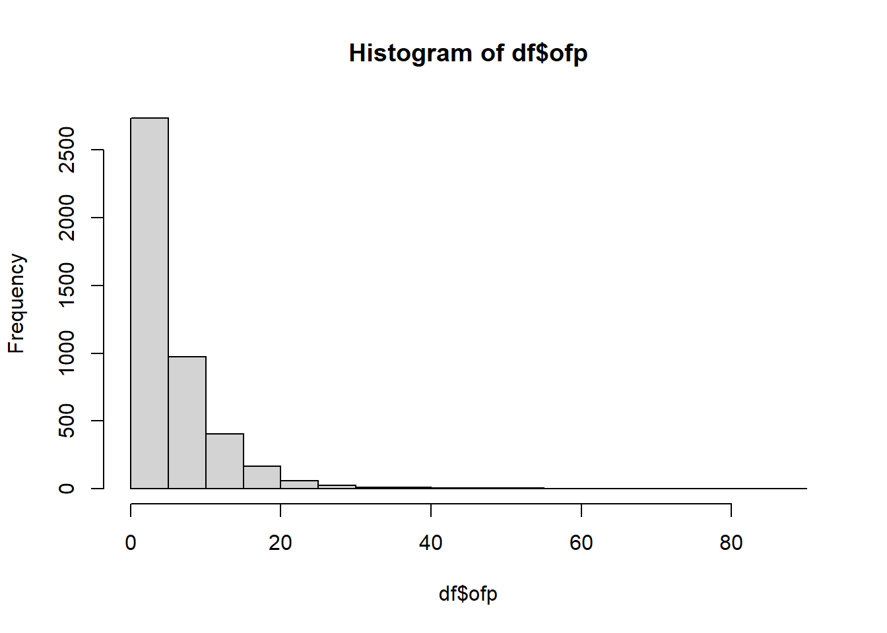

load("../../Data/DT.rda")ST-518 HW 6
output: pdf_document
R Question
1. Model the number of visits
(5 points) Consider data on 4406 individuals, aged 66 and over, who are covered by Medicare, a public insurance program, in the file DT.rda. The objective is to model the number of physician/non-physician office and hospital outpatient visits using available covariate information for the patients. The covariates include health status variables hosp (number of hospital stays), health (self-perceived health status), numchron (number of chronic conditions), as well as socioeconomic variables gender, school (number of years of education), and privins (private insurance indicator). Once you download the DT.rda file, you can load it into R using load("DT.rda").
a. Produce a histogram
Produce a histogram of the dependent variable. What types of statistical models (.e.g, Poisson regression, hurdle Poisson model, etc.) should you consider for these data? Give a brief justification for your answer.
df <- dt
# str(dt)
hist(df$ofp)
Lots of zeroes and long tail means Negative Binomial, probably zero inflated
b. Fit the models
Fit the models you indicated in part (a), using the identical set of explanatory variables in each, and report the AIC for each.
# names(dt)
mod.nb0 <- zeroinfl(ofp ~ hosp + health + numchron + gender + school + privins,
dist = "negbin",
data = dt)
mod.nb <- glm.nb(ofp ~ hosp + health + numchron + gender + school + privins,
data = dt)summary(mod.nb0)
Call:
zeroinfl(formula = ofp ~ hosp + health + numchron + gender + school +
privins, data = dt, dist = "negbin")
Pearson residuals:
Min 1Q Median 3Q Max
-1.1966 -0.7097 -0.2784 0.3256 17.7661
Count model coefficients (negbin with log link):
Estimate Std. Error z value Pr(>|z|)
(Intercept) 1.193466 0.056737 21.035 < 2e-16 ***
hosp 0.201214 0.020392 9.867 < 2e-16 ***
healthpoor 0.287190 0.045940 6.251 4.07e-10 ***
healthexcellent -0.313540 0.062977 -4.979 6.40e-07 ***
numchron 0.128955 0.011938 10.802 < 2e-16 ***
gendermale -0.080093 0.031035 -2.581 0.00986 **
school 0.021338 0.004368 4.886 1.03e-06 ***
privinsyes 0.126815 0.041687 3.042 0.00235 **
Log(theta) 0.394731 0.035145 11.231 < 2e-16 ***
Zero-inflation model coefficients (binomial with logit link):
Estimate Std. Error z value Pr(>|z|)
(Intercept) -0.06354 0.27668 -0.230 0.81837
hosp -0.81760 0.43875 -1.863 0.06240 .
healthpoor 0.10178 0.44071 0.231 0.81735
healthexcellent 0.10488 0.30965 0.339 0.73484
numchron -1.24630 0.17918 -6.956 3.51e-12 ***
gendermale 0.64937 0.20046 3.239 0.00120 **
school -0.08481 0.02676 -3.169 0.00153 **
privinsyes -1.15808 0.22436 -5.162 2.45e-07 ***
---
Signif. codes: 0 '***' 0.001 '**' 0.01 '*' 0.05 '.' 0.1 ' ' 1
Theta = 1.484
Number of iterations in BFGS optimization: 31
Log-likelihood: -1.209e+04 on 17 Dfsummary(mod.nb)
Call:
glm.nb(formula = ofp ~ hosp + health + numchron + gender + school +
privins, data = dt, init.theta = 1.206603534, link = log)
Coefficients:
Estimate Std. Error z value Pr(>|z|)
(Intercept) 0.929257 0.054591 17.022 < 2e-16 ***
hosp 0.217772 0.020176 10.793 < 2e-16 ***
healthpoor 0.305013 0.048511 6.288 3.23e-10 ***
healthexcellent -0.341807 0.060924 -5.610 2.02e-08 ***
numchron 0.174916 0.012092 14.466 < 2e-16 ***
gendermale -0.126488 0.031216 -4.052 5.08e-05 ***
school 0.026815 0.004394 6.103 1.04e-09 ***
privinsyes 0.224402 0.039464 5.686 1.30e-08 ***
---
Signif. codes: 0 '***' 0.001 '**' 0.01 '*' 0.05 '.' 0.1 ' ' 1
(Dispersion parameter for Negative Binomial(1.2066) family taken to be 1)
Null deviance: 5743.7 on 4405 degrees of freedom
Residual deviance: 5044.5 on 4398 degrees of freedom
AIC: 24359
Number of Fisher Scoring iterations: 1
Theta: 1.2066
Std. Err.: 0.0336
2 x log-likelihood: -24341.1070 AIC(mod.nb0, mod.nb)| df | AIC | |
|---|---|---|
| mod.nb0 | 17 | 24215.29 |
| mod.nb | 9 | 24359.11 |
c. interpretation of the models
Based on parts (a) and (b) and considering interpretation of the models in the context of the data, write a sentence summarizing your findings in terms of which model seems most appropriate for these data.
vuong(mod.nb, mod.nb0)Vuong Non-Nested Hypothesis Test-Statistic:
(test-statistic is asymptotically distributed N(0,1) under the
null that the models are indistinguishible)
-------------------------------------------------------------
Vuong z-statistic H_A p-value
Raw -5.917202 model2 > model1 1.6373e-09
AIC-corrected -5.324799 model2 > model1 5.0532e-08
BIC-corrected -3.431859 model2 > model1 0.00029973s1 <- summary(mod.nb0)
# s1
s1$coefficients[[1]][,1] (Intercept) hosp healthpoor healthexcellent numchron
1.19346578 0.20121399 0.28719018 -0.31354004 0.12895450
gendermale school privinsyes Log(theta)
-0.08009312 0.02133836 0.12681467 0.39473077 1-exp(-0.31354004)[1] 0.2691449Theta is larger than 1 in both models, indicating that there is some over dispersion. The AICs are similar but the Voung test shows the zero inflated negative binomial is preferable. The most appropraite model seems to be the zero-inflated negative binomial. A person in excellent health is expected to be 27% less likely to visit a Doctor than someone of less than excellent health in this population among those who are not otherwise disinclined to visit, all other vaariable being equal.
Conceptual Question
2. zero-inflated model or a hurdle
(5 points) For each of the following response variables, indicate whether a zero-inflated model or a hurdle model would be more appropriate. Justify your answer by providing possible processes responsible for generating the excess zeros and the counts that correspond to the model. There may not be a clear answer for you, so simply pick one and try to justify it.
a.
School administrators study the attendance behavior of high school juniors and take the number of days absent as the response variable.
With school absenses, I expect there to be excess zeroes. The hurdle model assumes all zeroes to be true zeroes. So, the zero-inlated model would be preferable.
b.
Wildlife biologists want to model how many fish are being caught by fishermen at a state park. All park visitors are asked how many fish they caught.
Again the assumption of all zeroes being true dictates my decision. All park visitors are not fishermen. So, there would be excess zeroes and the zero-inflated model is better.
c.
Researchers are interested in creating a stock trading model for investors. The response is trades per week made by each investor.
For active traders, if they are not trading that’s a true zero. Here the hurdle model is appropriate.
d.
Researchers want to create a model for loan defaults. They take the number of outstanding payments that exist for each of a random sample of loans.
I assume that there are cases in which there could be excess zeroes, but that the banks have already accounted for them. For example, I am assuming they are not including non-payment because of death. In the assumed situation the hurdle model would be appropriate.